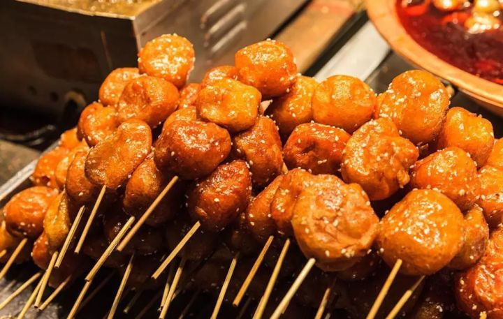

美食推荐
凉糕是锦里的一大特色，利用糖、豆沙、江米等材料做成的糕点冰起来，再切块就成了糯米凉糕了，吃起来软糯可口，非常清凉。
叶儿粑又叫艾馍，是用糯米粉面包麻茸甜馅心或鲜肉咸馅心做成的，跟粽子有点像，又鲜又糯。
你以为伤心凉粉是让人感动到流泪的凉粉吗？ 错错错，伤心凉粉就是传说中能辣哭你的凉粉，凉粉里面加了小米辣，即便平时不轻易流泪的汉子，面对伤心凉粉也不得不流泪。 不信可以去试试哦~
上号的牛肉裹上饱满的米粒，放在垫上竹叶的蒸锅里，上锅蒸到肉酥软为止。锦里的竹叶粉蒸肉不仅味道好，卖相也颇为精致，翠绿的竹叶配上红嫩的肉末，加以小米椒和葱花相配，不仅仅美味，更是视觉上的享受。

牛肉焦饼其实就是一种馅饼啦，不过在川味的调教下，牛肉焦饼又酥又嫩，非常好吃。老板说，吃三义园焦饼还有一个讲究，那就是喝牛肉汤——浓而不腻、淡中有浓浓淡别致、味浓色纯的牛汁清汤，是焦饼是最佳伴侣。
麻辣兔头是四川成都特色名小吃之一，鲜香味美，口感极佳。


糖油果子就像是缩小版的麻圆，是伴随成都人长大的小时候的味道，色泽黄亮，外酥内糯，香甜可口。